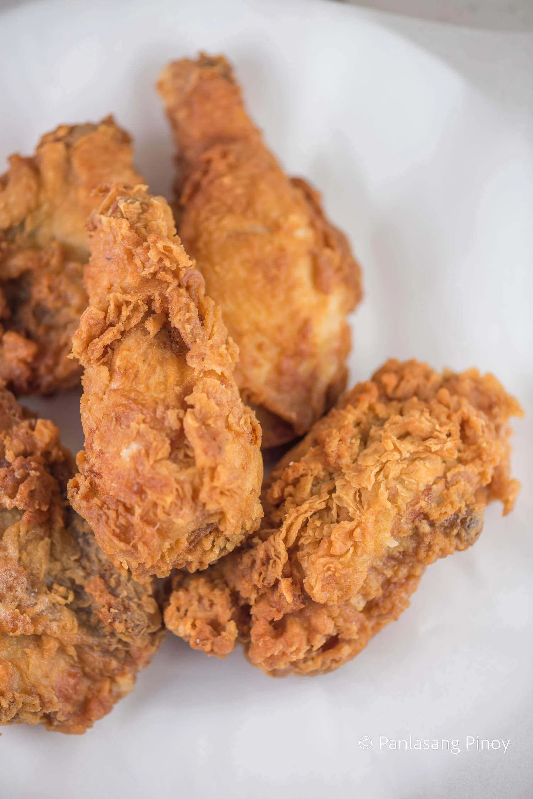

Crispy Fried Chicken

A recipe for Crispy Fried Chicken
Crispy fried chicken has become a beloved staple of Filipino cuisine, with its golden, crackling skin and juicy, tender meat at the heart of many mealtime memories. While fried chicken is enjoyed globally, the Filipino twist brings something special to the table. From humble carinderias to household kitchens and even upscale restaurants, everyone seems to have their own version of the perfect fried chicken. Whether marinated in local spices or paired with a side of banana ketchup or gravy, this dish is a testament to how Filipinos take something familiar and make it distinctly their own.
But beyond the crunch and flavor, fried chicken offers something deeper—it’s comfort food at its finest. Whether shared during a family dinner or eaten straight out of a takeout box with friends, it brings people together. That irresistible combination of crispy skin and flavorful meat has a way of turning any meal into something memorable. Take one bite, and you’ll understand why it’s a classic you’ll keep coming back to.
Ingredients (for 2 people)
- 1 lbs. chicken cut into individual pieces
- 0.33 tablespoon salt
- 1 cups cooking oil
- 0.33 cup all-purpose flour
Batter Ingredients
- 0.25 cup evaporated milk
- 0.33 Knorr Chicken Cube
- 0.67 eggs
- 0.25 cups all-purpose flour
- 0.33 teaspoon baking powder
- 0.67 teaspoons garlic powder
- 0.17 teaspoon salt
- 0.08 teaspoon ground black pepper
Steps
- Rub salt all over the chicken. Let it stay for 15 minutes.
- Heat the oil in a cooking pot.
- Prepare the batter. Start by pressing a fork on the chicken cube until it is completely squashed. Combine it with warm milk. Stir until well blended. Set aside.
- Combine flour, baking powder, garlic powder, salt, and ground black pepper. Mix well using a fork or a wire whisk. Set aside.
- Beat the eggs in a large mixing bowl. Add the milk mixture. Continue to beat until all the ingredients are all incorporated. Add half of flour mixture. Whisk. Add the remaining half and whisk until the texture of the batter becomes smooth.
- Dredge the chicken in flour and then dip in batter. Roll it again in flour until completely covered. Fry in medium heat for 7 minutes per side.
- Remove from the pot and put in a plate lined with paper towel. This will absorb the oil.
- Serve with ketchup or gravy.
- Share and enjoy!
Home